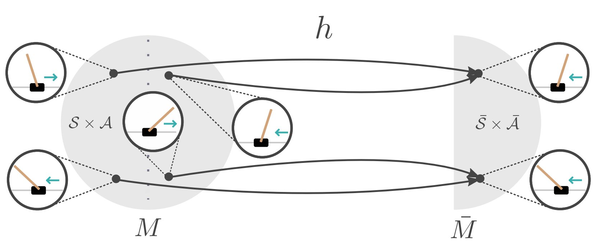
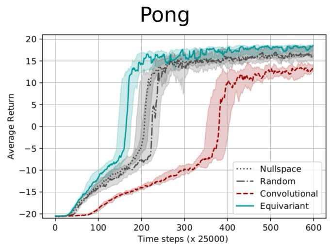

Many RL problems exhibit symmetries: in CartPole, we can mirror the state to find an equivalent state. If we also mirror the actions ‘left’ and ‘right’, we can re-use experience from one side to learn about the other.

Using MDP homomorphisms, we can formalize such symmetries, and use them for equivariant reinforcement learning.

We build networks that are MDP homomorphic under group transformations, in order to more efficiently make use of data collected during training. Since MDP homomorphisms are problem-dependent, we additionally propose a computational way of constructing equivariant network layers. We present a symmetrizer operator that projects a weight matrix to a group-specific equivariant subspace. As a result, we can computationally construct equivariant fully connected and convolutional layers painfree! Finally, we confirm empirically that using MDP homomorphic networks leads to faster convergence for tasks that exhibit group symmetries, such as Pong.
For more results and details, have a look at the paper.